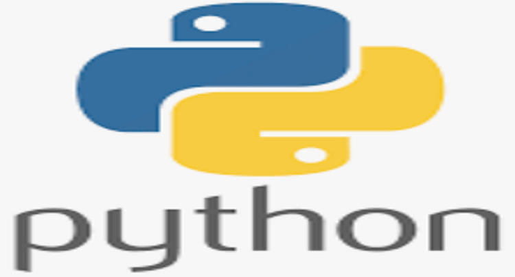

Data Analytics and Training
As a Senior Consultant, I have honed my expertise in R Markdown, Python, Stata, SmartPLS, NVivo, etc, equipping organizations with the tools to decipher intricate data landscapes. My approach is rooted in a mission to empower through knowledge, ensuring that every statistical strategy is tailored to promote growth and innovation.
Data Analytics Using Python

Data analytics using Python offers a robust framework for extracting valuable insights from data. By mastering some foundational concepts and tools, students can build a solid foundation in data analytics and prepare for advanced topics in machine learning and data science.
Data Analytics Using R

This course provides an introduction to R programming for undergraduate students, focusing on fundamental concepts and practical applications in data analysis. Students will learn how to write R scripts, manage data, and create visualizations using R’s versatile tools. The course is designed to build a solid foundation in R programming, enabling students to tackle a wide range of data analysis tasks in their academic and professional pursuits.
Data Analytics Using Stata

Econometrics analysis using Stata equips students with the tools and techniques necessary to perform sophisticated data analysis in economics. By mastering Stata, students can effectively analyze economic data, test hypotheses, and contribute to informed policy-making
SPSS for Data Analytics
Welcome to our comprehensive SPSS training course, designed to transform beginners into proficient data analysts in just eight weeks! As we delve into the world of statistical analysis using SPSS, you’ll unlock the power of data-driven decision-making, mastering techniques from basic descriptive statistics to advanced inferential analysis. Whether you’re looking to enhance your research capabilities, boost your career prospects, or simply gain a deeper understanding of data, this course offers a practical, hands-on approach that will equip you with the skills to tackle real-world data challenges confidently. Get ready to embark on an exciting journey into the realm of statistics and discover how to turn raw data into meaningful insights with SPSS!